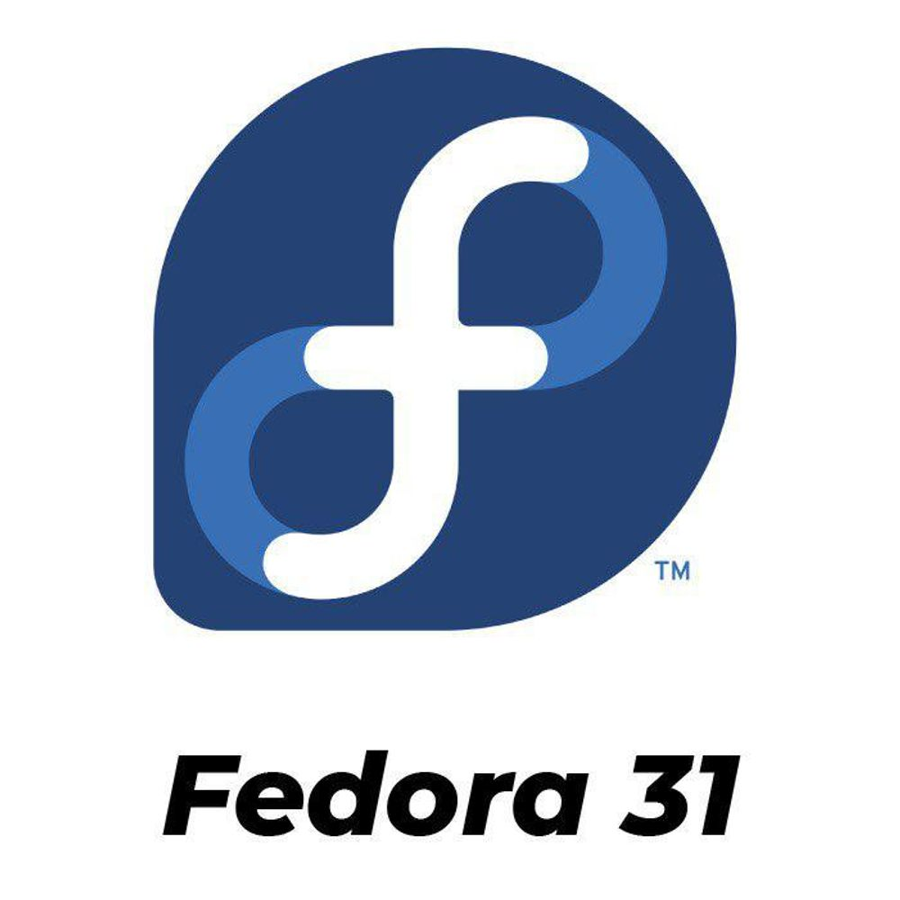

Fedora
Fedora — это современный дистрибутив, поддерживаемый Red Hat, с акцентом на инновации и использование новейших технологий. Использует менеджер пакетов dnf и предоставляет графическое окружение GNOME. Fedora подходит как для разработчиков, так и для энтузиастов Linux, но может быть менее стабильной из-за частых обновлений.